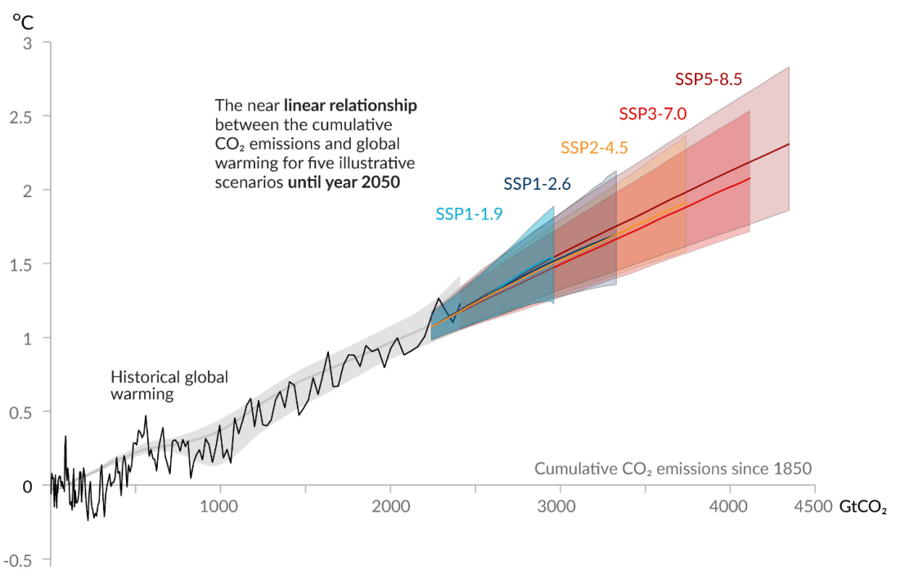

Cumulative carbon emissions have and will continue to increase. Source: Working Group 1 figure SPM.10 for the IPCC 6th Assessment Report.
Odd? Yet on reflection, the oddity vanishes, since climate policy discussions are tightly constrained by conventional economic thinking, which regards limits to growth as anathema. Until recently, neither the scientific nor the philosophical communities showed much interest in challenging this taboo. Among policymakers, proposals to limit climate change have focused on technological fixes or efficiency improvements within a context of continued growth.
This longstanding approach, however, has proven itself a failure. Greenhouse gas emissions continue to increase, and disruptive climate change has come on more quickly than expected. Impacts that scientists predicted would show up in the second half of this century are happening now. Worries about how our grandchildren’s lives might be constrained have been replaced by worries about our children’s lives, or even our own.
Addressing population must be part of a global response to climate change
In the face of an obviously unraveling global ecosystem, people are starting to question once-sacred cows, such as the possibility of endless economic growth, or humanity’s ability to safely manage unimaginably complex systems — even if such ideas haven’t yet made their way into national policies or international agreements.
One example of this developing open-mindedness (or perhaps panic) has been a surge in scientific discussions around population in relation to climate change. A 2019 “Warning of a Climate Emergency,” signed by over 11,000 scientists, forthrightly described continued increases in human population and the world gross domestic product as “profoundly troubling signs” of ecological decline. It stated: “The world population must be stabilized — and, ideally, gradually reduced — within a framework that ensures social integrity.” A scientific consensus may be emerging that addressing population must be part of humanity’s response to global climate change.
Thankfully, philosophers and ethicists have also begun to acknowledge the population/climate connection. Ten years ago when I reviewed the climate ethics literature, I found almost no discussion of population matters. But a new follow-up, “Climate ethics and population policy: A review of recent philosophical work,” just published in the journal WIRES: Climate Change, uncovered numerous books and articles exploring the issue. Climate ethicists are now vigorously debating many aspects of population policy, from contraceptive availability to government incentives regarding family size.
Reviewing recent work, I found that both rights-based and consequentialist approaches seek to balance reproductive rights against other human rights and interests threatened by overpopulation and ecological degradation. While biocentric ethicists (those concerned about other species) have additional reasons to advocate for smaller human populations, an important part of the arguments, for humans per se, is to affirm the need to balance reproductive rights against reproductive responsibilities in order to promote the well-being of future generations.